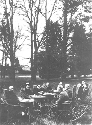
Pátečníci
Čím se vyznačuje demokracie?
Jaký je tvůj názor na demokracii? Jaké má klady a jaké zápory?
Je u nás demokracie? Proč?
Které státy nejsou demokratické? Jak se to pozná?
Co víš o historii světové demokracie?
Panuje demokracie na vaší škole? Jak se to projevuje?
|
PÁTEČNÍCI
Ve vile bratří Čapků na pražských Vinohradech se od roku 1926 pravidelně setkávali umělci, intelektuálové a politici. Protože to bylo v pátek, vžilo se pro ně označení pátečníci. Šlo o společnost s velmi rozmanitými názory. Navštěvoval ji prezident Masaryk, spisovatelé Vančura, Langer, Kopta, Poláček a Šrámek, historik Šusta nebo jazykovědec Mathesius. Pátečníci podporovali demokratický režim v nově vzniklém Československu a tzv. politiku Hradu. Masaryk i další politikové naopak dopřávali sluchu jejich názorům a různě je podporovali.
Řada spisovatelů působila v Lidových novinách. K jejich redaktorům patřili Čapek, Poláček, Bass nebo Peroutka. Většinou se věnovali psaní článků na pomezí literatury jako jsou úvodníky, rozhlásky, sloupky, fejetony nebo soudničky. Jejich vyznění bylo často humorné, politická témata vyvažovaly črty ze života obyčejných lidí. Novinářská tvorba těchto autorů ovlivnila i jejich tvorbu literární, která oplývá humorem, zajímavými středostavovskými postavičkami a oceněním poctivé lidské práce. Těmto autorům nebyla cizí ani tematika sportovních utkání, zahradničení nebo chovu domácích mazlíčků.
V odborné literatuře se název pro tuto generaci autorů zatím neustálil. Často se o ní mluví jako o generaci pragmatické nebo přímo čapkovské generaci. Demokratické spisovatele těžce zasáhl Mnichov a následná okupace. Další ranou byl Únor 1948. Peroutka si zachránil život emigrací a ve svém úsilí pokračoval v Rádiu Svobodná Evropa.
|
Lidové noviny
Lidové noviny začaly vycházet roku 1893 na Moravě. Jejich vydavatelem byl politik Adolf Stránský. V době meziválečné byla většina deníků orgánem nějaké politické strany. Lidové noviny byly liberálním listem blízkým Hradu. Podporovaly prezidenta Masaryka v jeho snaze budovat demokratické Československo. Lidovými novinami prošla řada významných spisovatelů – bratři Čapkové, Bass, Poláček nebo Peroutka. A dále Dyk, Gellner, Mahen, Neumann, Sekora, Těsnohlídek, Řezáč, Drda nebo Weiner. S přestávkami vycházejí dodnes, i když v různých dobách plnily různou úlohu a jejich podoba i zaměření se proměňovaly. Obzvláště významné byly samizdatové Lidové noviny (1988-1989).
Co je úvodník, rozhlásek, sloupek, fejeton, polemika, kurzíva, glosa a soudnička?
Jaký by byl podle tebe osud Karla Čapka po Únoru 1948?
|
Tomáš Garrigue Masaryk
(1850-1937)
Tomáš Masaryk pocházel z Hodonína a zemřel v Lánech. Původně měl být kovářem, ale dostal se na německé gymnázium v Brně. Vysokoškolská studia absolvoval ve Vídni, kde také získal doktorát z filozofie. Jeho chotí se stala Američanka Charlotte Garrigue. Po zřízení české univerzity (1882) byl jmenován jejím mimořádným profesorem. Založil časopis Athenaeum, ve kterém inicioval diskuzi o Rukopisech. Během hilsneriády vystupoval proti antisemitismu. Byl poslancem říšské rady. V prosinci 1914 emigroval a začal organizovat zahraniční odboj. Čtyřikrát za sebou byl zvolen prezidentem Československa (1918-1935). Masaryk je autorem odborných spisů Sebevražda hromadným jevem společenským moderní osvěty, Základové konkrétní logiky, Česká otázka, Naše nynější krize, Palackého idea národa českého, Ideály humanitní, Otázka sociální, V boji o náboženství, Rusko a Evropa, Světová revoluce, Moderní člověk a náboženství, Jan Hus, J. A. Komenský, Karel Havlíček nebo Studie o Dostojevském.
|
Karel Čapek: Hovory s T. G. Masarykem
Obsáhlý knižní rozhovor Hovory s T. G. Masarykem vznikal postupně v letech 1928 až 1935. Právo poslední ruky ponechal Karel Čapek Masarykovi, který připravený text opakovaně doplňoval a přepracovával. Prezident v sobě nezapřel univerzitního profesora. Často používá latinské citáty a složitá souvětí. V první části Hovorů vypráví Masaryk o svém mládí. Druhá mapuje jeho univerzitní kariéru, exil v době 1. světové války a zvolení prezidentem. Třetí část je věnována Masarykovým názorům na filozofii, náboženství nebo politiku. Dílo je plné nadčasových myšlenek a nabízí hluboký vhled do Masarykova způsobu uvažování.
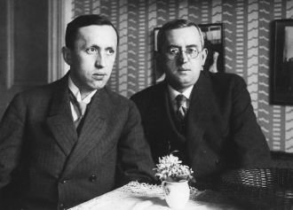
Bratři Čapkové
|
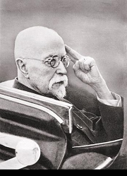
Prezident Masaryk
Charakterizuj Masarykův styl.
Které Masarykovy myšlenky jsou aktuální i dnes?
Zjisti význam slov, kterým nerozumíš.
Jaký je tvůj názor na Masaryka?
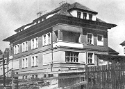
Vila bratří Čapků na pražských Vinohradech
Jak se ti líbí obrazy Josefa Čapka?
|
Josef Čapek (1887-1945)
Josef Čapek se narodil v Hronově a zahynul v koncentračním táboře Bergen-Belsen. Byl významným avantgardním malířem. S bratrem Karlem napsal povídkové knihy Zářivé hlubiny a jiné prózy a Krakonošova zahrada nebo dramata Ze života hmyzu a Adam Stvořitel. Samostatně vydal knihy Lelio, Stín kapradiny nebo Kulhavý poutník. Je autorem esejů Nejskromnější umění a Umění přírodních národů. Posmrtně vyšel jeho deníkový soubor Psáno do mraků a sbírka Básně z koncentračního tábora. Pro děti napsal Povídání o pejskovi a kočičce, pohádku O tlustém pradědečkovi a loupežnících a knížku Povídejme si, děti.
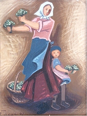
Josef Čapek: Květinářka
|
Josef a Karel Čapkové: Ze života hmyzu
Děj satirické hry Ze života hmyzu rámuje postava tuláka, který rezignoval na život a na svět. Tulák pozoruje hmyzí hemžení. Jednotlivé druhy hmyzu přitom představují zkarikované lidské typy. Motýlí láska je přelétavá a jejich vztahy povrchní. Chrobáci se sobecky starají jen o svůj majeteček – kuličku trusu. Mravenci sice obětují svůj život ve prospěch celku, ale neustále válčí s jinými druhy mravenců. Právě narozené jepice opěvují věčnost života, aby vzápětí padly mrtvé. Autoři nabízejí dva různé konce inscenace. V jednom tulák umírá, ve druhém se rozhodne pro život a odchází pracovat s dřevorubci.
Josef Čapek: Psáno do mraků
Kniha Psáno do mraků obsahuje krátká zamyšlení, aforismy a glosy Josefa Čapka. Autor se v nich vyjadřuje k problematice tvorby, umění, kultury, společnosti nebo smyslu života. Častokrát jde o velmi intimní zápisky, které mají charakter deníkových záznamů.
|
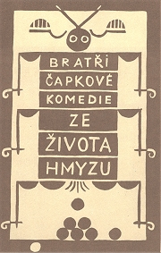
Knižní obálka od Josefa Čapka
Jak nazývají chrobáci kuličku trusu?
Jak se oslovují postavy mezi sebou?
Co chtěli autoři v této scéně vyjádřit?
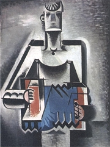
Josef Čapek: Harmonikář
Využij jednu z Čapkových myšlenek jako motto pro vlastní slohovou práci.
|
Karel Poláček (1892-1945)
Poláček se narodil v Rychnově nad Kněžnou a zemřel v koncentračním táboře Dora u Buchenwaldu. Pracoval jako redaktor Lidových novin, kam psal soudničky. Jelikož pocházel z židovské rodiny, nemohl v době protektorátu publikovat. Román Hostinec U kamenného stolu proto vyšel pod jménem malíře Rady. Poláček se dobrovolně přihlásil do transportu do Terezína, aby mohl následovat svou lásku. Psal knihy humoristické – Muži v offsidu, Hráči, Lehká dívka a reportér, Edudant a Francimor, Bylo nás pět, satirické – Michelup a motocykl, Dům na předměstí i realistické – tetralogie Okresní město, Hrdinové táhnou do boje, Podzemní město, Vyprodáno. Vydal také Židovské anekdoty nebo Žurnalistický slovník.
|
Karel Poláček: Bylo nás pět
Humoristická próza Bylo nás pět líčí různá dobrodružství party kluků na malém městě. Vypravěčem je školák Petr Bajza, jehož vyjadřování je hlavním zdrojem humorného vyznění knihy. Petr spojuje přehnaně knižní výrazy a tvary slov s nespisovnými a jeho sloh je značně neobratný. Kromě Petrových kamarádů Antonína Bejvala, Pepka Zilvara, Édy Kemlinka, Čenka Jirsáka, dalších dětí a psa v knize vystupují zkarikované postavy dospělých obyvatel městečka. Závěr knihy tvoří Petrův horečnatý sen o putování do Indie. Kniha vyšla až po autorově smrti.
Šnorer Lebertran byl velmi zbožný. A tak, když se jednou vroucně modlil, zjevil se mu archanděl Gabriel. „Milý Gabrieli," povídal Lebertran, „co je Bohu sto tisíc let?" „Sto tisíc let je Bohu jedna minuta." „A co je Bohu sto tisíc korun?" „Sto tisíc korun je Bohu jeden haléř." „Ctěný pane archanděli, přimluv se u Boha, ať mi daruje jeden haléř." „Počkej minutu…" (židovská anekdota)
|
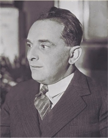
Vyber si jeden odstavec a najdi v něm nespisovná slova.
Vypiš z textu knižní výrazy.
Co je ofsajd?

Josef Čapek Pouštění draka
|
Eduard Bass (1888-1946)
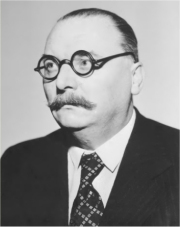
Eduard Schmidt se narodil v Praze, kde také zemřel. Otec vlastnil kartáčnickou firmu, kterou syn zprvu obchodně zastupoval, ale později začal vystupovat pod pseudonymem Bass v kabaretu Červená sedma. Stal se šéfredaktorem Lidových novin, kam psal rozhlásky. Je autorem humoristické prózy Klapzubova jedenáctka, románu Cirkus Humberto a povídek Lidé z maringotek. Vydal též knihy Jak se dělá kabaret?, To Arbes nenapsal, Vrchlický nezbásnil nebo Umělci, mecenáši a jiná čeládka.
|
Eduard Bass: Cirkus Humberto
Bassův román Cirkus Humberto vypráví o osudech několika generací slavného cirkusového rodu. Čech Antonín Karas, původním povoláním zedník, odchází po smrti manželky do Hamburku, kde začne pracovat pro cirkus Humberto jako trumpetista. Jeho syn Vašek si prostředí manéže zamiluje a postupně se stane krasojezdcem, artistou i krotitelem šelem. Po svatbě z rozumu s dcerou ředitele Helenou Berwitzovou přebírá celý cirkus. V době hospodářské krize musejí cirkus prodat, ale zařídí si v Praze úspěšné varieté. Jejich syn Petr se o povolání rodičů nezajímá a více ho láká studium. V rodinné tradici naštěstí pokračuje vnučka Lidka, která se stala tanečnicí. Díky ní jméno Humberto žije dál v uměleckém světě. Kniha je zabydlena zajímavými postavičkami z různých koutů světa, které spojila láska k cirkusu.
Román Cirkus Humberto vyšel v době protektorátu, kdy byla ohrožena samotná existence českého národa. Ukazuje vlastenectví Čechů i jejich schopnosti, díky nimž se dokázali prosadit mimo svou zemi.
|
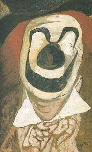
František Tichý: Hlava klauna, Fratellini
Chtěl/a bys pracovat v cirkusu? Proč?
Které kletby znáš?
Kteří Češi se proslavili v zahraničí? Čím?
V čem vynikáš ty?
|
Ferdinand Peroutka
(1895-1978)
Peroutka se narodil v Praze a zemřel v New Yorku. Patří k nejvýznamnějším českým novinářům a obhájcům demokracie. Byl šéfredaktorem týdenníku Přítomnost (1924-1939), kterou finančně podporoval prezident Masaryk, a politickým komentátorem Lidových novin. Napsal knihy Jací jsme nebo Budování státu (nedokončeno). Za války byl vězněn v koncentračních táborech Dachau a Buchenwald. Po osvobození redigoval Svobodné noviny (1945-48) a Dnešek (1946-48). V roce 1948 uprchl do exilu. Z USA řídil československou sekci Rádia Svobodná Evropa. Napsal Demokratický manifest. Je rovněž autorem próz Pozdější život Panny a Oblak a valčík (též drama) nebo tragédie Šťastlivec Sulla.
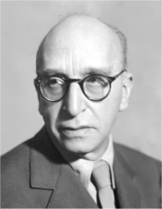
František Langer
|
Ferdinand Peroutka – novinář
Peroutka hájil ve svých článcích a polemikách ideály demokracie. Velmi brzy si všiml nebezpečí, která v sobě skrývala komunistická ideologie. Na přelomu let 1924 a 1925 zveřejnil v Přítomnosti rozsáhlou anketu Proč nejsem komunistou?, do které se zapojila řada osobností, například bratři Čapkové. Varoval před fašismem i nacismem a upozorňoval na jejich nebezpečnou podobnost s komunistickým režimem v Sovětském svazu.
Další autoři a jejich díla
František Langer: Velbloud uchem jehly, Periferie
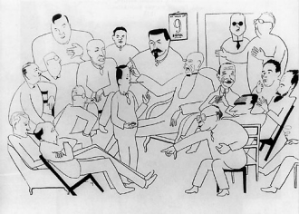
Adolf Hoffmeister: Pátečníci
|
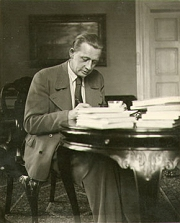
Jaké odlišnosti Peroutka vidí v nacistickém a stalinském režimu?
V čem se podle Peroutky navzájem podobají?
Souhlasíš s autorovými názory? Proč?
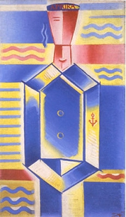
Josef Čapek: Námořník (Afrika)
|
Internetové stránky
Čapek, Karel: Hovory s T.G.Masarykem
Čapkové: Krakonošova zahrada, Zářivé hlubiny a jiné prózy, Juvenilie
Čapek, Karel: Proč nejsem komunistou
Čapek, Josef: Povídání o pejskovi a kočičce
Čapek, Josef: Proč nejsem komunistou
Poláček: Bylo nás pět, Muži v offsidu
Bass: Klapzubova jedenáctka
Bass: Cirkus Humberto
Bassovy sloupky
Masaryk, rozcestník
Masaryk: Jak pracovat
Polák: Stručný životopis T.G. Masaryka, Masarykovo náboženství
Masaryk
Masaryk, prezident
Masaryk
Masaryk, životopis
Herben: T.G.Masaryk život a dílo presidenta osvoboditele
Kučera: Masaryk kontra Pekař, článek
Tipy
Lidové noviny
Přítomnost
Nadace Ferdinanda Peroutky
Masarykova společnost
Masarykův ústav AV ČR
Cirkus Humberto
PEN klub
Exkurze
Lány
Muzeum T.G.Masaryka, Lány
Masarykovo muzeum, Hodonín
|
Doporučená četba
Bass, Eduard: Kázáníčka, Kentaur, Praha 1993
Bass, E.: Klapzubova jedenáctka, BB art, Praha 2000
Bass, E.: Moje kronika, ČSS, Praha 1985
Bass, E.: Rozhlásky, ČSS, Praha 1957
Buriánek, František: Karel Čapek, ČSS, Praha 1988
Čapek, Josef: Kulhavý poutník, Odeon, Praha 1976
Čapek, J.: Nejskromnější umění (katalog k výstavě)
Čapek, K.: O demokracii, novinách a českých poměrech, Academia, Praha 2003
František Tichý, Gallery, Praha 2002 (katalog k výstavě)
Guth-Jarkovský, Jiří: Společenský katechismus, Levné knihy KMa, Praha 2000
Hájková, Alena: Knížka o Karlu Poláčkovi, Academia, Praha 1999
Josef Čapek a kniha, Praha 1958
Karel Poláček a podoby humoru v české literatuře 19. a 20. století, Rychnov nad Kněžnou 2004
Kosatík, Pavel: Ferdinand Peroutka (1895-1938), Paseka, Praha 2003
Kosatík, P.: Ferdinand Peroutka pozdější život (1938-1978), Paseka, Praha 2000
Masaryk, T.G.: Ideály humanitní, Melantrich, Praha 1990
Masaryk, T.G.: O demokracii, Melantrich, Praha 1991
Masarykova slova, Daniel, Praha 1990
Mluví k vám Ferdinand Peroutka (2 svazky), Argo
Mráz, Bohumír: Josef Čapek, Horizont, Praha 1987
Opelík, J., Slavík, J.: Josef Čapek, Praha 1996
Otáhal, Milan: Ferdinand Peroutka – muž přítomnosti, Melantrich, Praha 1992
Pernes, Jiří: Svět Lidových novin 1893-1993, Lidové noviny Praha 1993
Peroutka, Ferdinand: Jací jsme, Demokratický manifest, Praha 1991
Peroutka, F.: O věcech obecných (2 svazky)
Peroutka, F.: Úděl svobody, Výbor z rozhlasových projevů 1951-1977, Academia, Praha 1995
Poláček, Karel: Se žlutou hvězdou, Praha 1961
Poláček, K.: Židovské anekdoty, ČSS, Praha 1991
Soubigou, Alain: Tomáš Garrigue Masaryk, přel. H.Beguivinová, Paseka Praha 2004
Spisy Františka Langera (15 svazků)
Spisy Karla Poláčka (20 svazků)
Spisy TGM (36 svazků)
TGM ve fotografii, Novinář, Praha 1990
|
Vypracuj písemný referát o některé z uvedených knih.
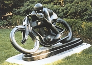
Otakar Švec: Motocyklista
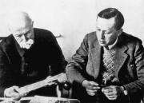
Prezident Masaryk s Karlem Čapkem
PEN klub
Mezinárodní sdružení spisovatelů PEN klub bylo založeno roku 1921 v Londýně. Jeho česká odnož vznikla roku 1925 díky úsilí Karla Čapka. PEN klub dbá na to, aby nikde na světě nebyla porušována svoboda projevu a literární tvorby a lidé pera nebyli pronásledováni za vyjádřené názory nebo publikovaná díla.
Co dalšího víš o organizaci PEN klub?
|
|